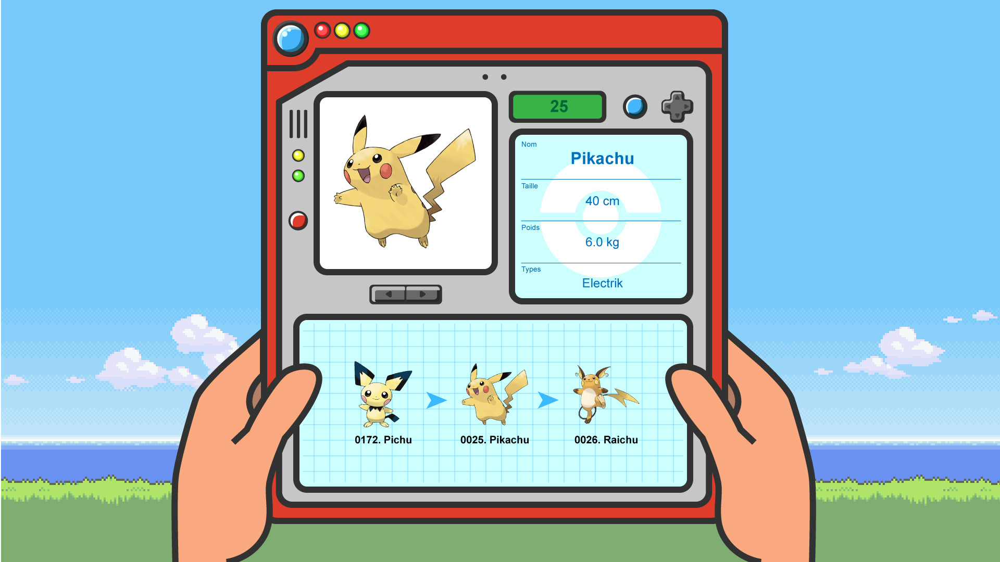
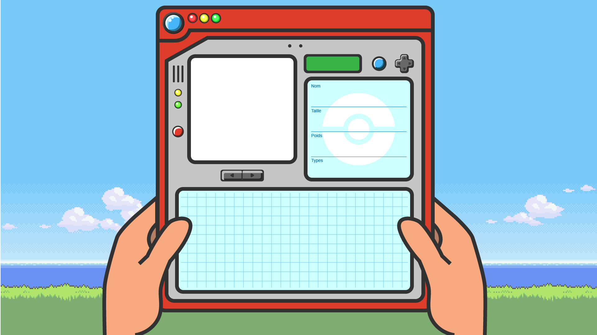
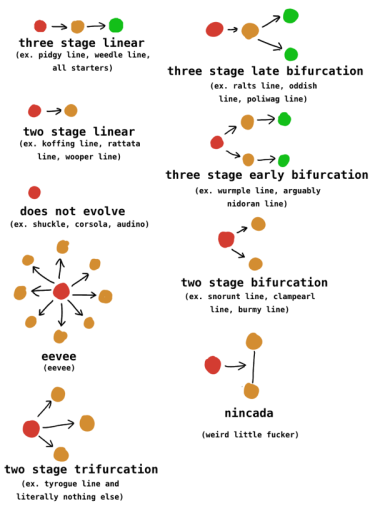
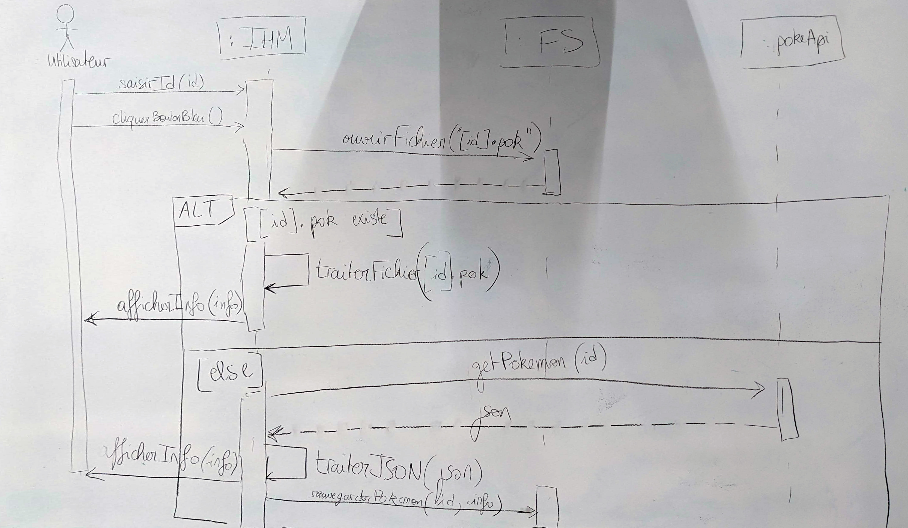
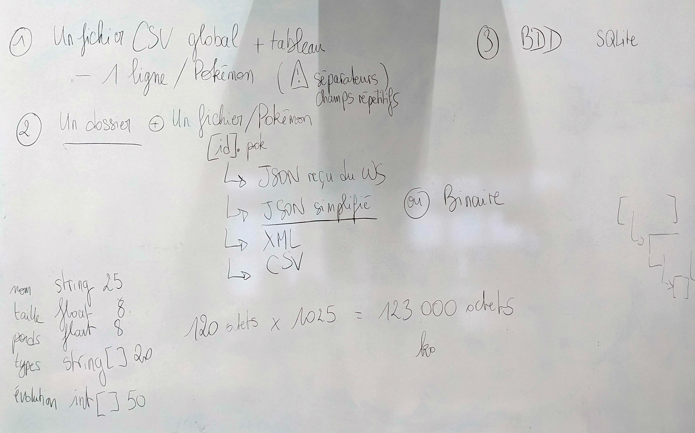
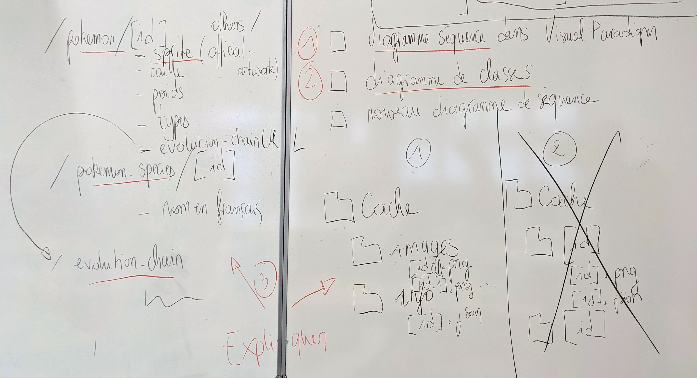
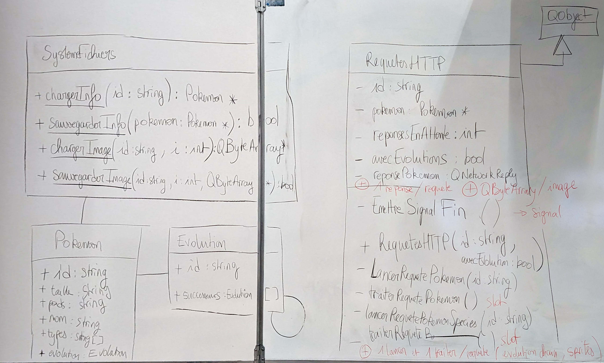
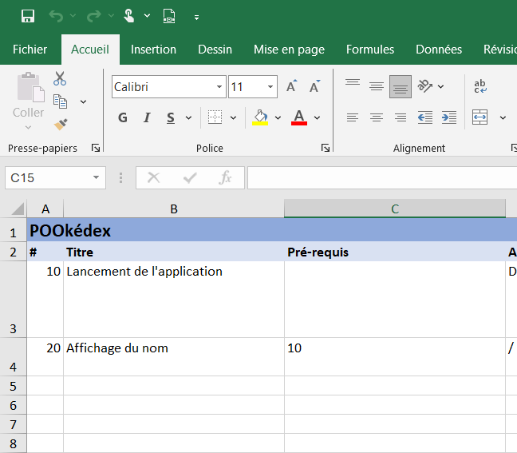

Projet Pokédex 2.0
Le besoin
Ce projet a pour objectif de réaliser un Pokédex en utilisant le framework Qt.
Le projet à réaliser doit prendre l'apparence suivante :

Un Pokédex est un appareil qui accompagne tout bon dresseur de Pokémon(1) et qui liste les Pokémon et leurs informations.
- Pokémon est invariable et s'écrit avec un accent même en anglais.
Notre application émulera cet appareil et s’appuiera sur les webservices du site internet pokeapi.co pour récupérer informations sur les Pokémon et leurs images.
Avancement du projet
-
Recueillir le besoin (oral/questions-réponses/prise de notes)
-
Analyse
-
Travaux préparatoires (étude de faisabilité, essais)
-
Envoyer une requête HTTP GET et gérer la réponse avec Qt
-
Manipuler des informations au format JSON
-
-
-
Conception
-
Définir les acteurs et les fonctionnalités du système
-
Schématiser à l'aide d'un diagramme de cas d'utilisations
-
Décrire les cas d'utilisation
-
-
Prendre en compte les contraintes techniques
-
Description du mécanisme de cache (pokeapi + images)
-
Schématisation de l'impact dans les diagrammes de séquences
-
-
Décrire l'IHM
- Créer une maquette de l'IHM
-
Définir l'architecture de l'application
-
Schématisation du diagramme de classes
-
Précisions sur les méthodes
-
Schématisation du diagramme de séquence "au plus proche"
-
-
Rédaction des spécifications
-
Rédaction du cahier de recette
-
Répartition des rôles/Planification
-
Présentation de la solution
-
-
Développement
-
Rédaction des tests unitaires
-
Codage
- Passage des tests unitaires
-
Intégration
-
-
Recette
-
Passage des tests de recette
-
Correction
-
-
Livraison
Fichiers du projet
-
Maquette initiale
-
Maquette vide

-
Icone
-
Chaines d'évolutions

-
Diagramme de séquence macro

-
Options de cache

-
Choix cache et webservices

-
Diagramme de classes

-
Cahier de tests

{kind=link}
{kind=link}
{kind=link}
{kind=link}
{kind=link}
{kind=link}
{kind=link}
Analyse
Travaux préparatoires
PokéAPI propose des webservices REST permettant de récupérer des informations sur les Pokémon.
Pour les utiliser, nous devons maîtriser deux techniques avec Qt :
-
Envoyer une requête HTTP GET et gérer la réponse
-
Manipuler des informations au format JSON
Envoyer une requête HTTP GET et gérer la réponse
-
Ajouter le module Network au projet Qt en ajoutant la ligne suivante au début du fichier
.pro: -
Pour gérer les requêtes HTTP, on utilisera un objet unique
QNetworkAccessManagerajouté en attribut de la fenêtre.Cet objet contient une méthode
QNetworkReply * get(QNetworkRequest(QUrl("url à requêter")))qui permet d’envoyer une requête HTTP de type GET.On sauvera l'adresse de l'objet
QNetworkReplyrenvoyée par la méthode dans un attributQNetworkReply *de la fenêtre.Ajouter les attributs suivants à la classe
MainWindow:Dans le constructeur de la
MainWindow, affecter un nouvel objetQNetworkAccessManageràqnametnullptràqnr(l'objetqnrsera renouvelé à chaque nouvelle requête).Détruire
qnametqnrlorsque le programme s'arrête. -
Ajouter un bouton dans la fenêtre qui permettra de déclencher l'envoi de la requête.
-
Connecter le clic du bouton à un nouveau slot
launchHTTPRequest.Dans la définition du slot
launchHTTPRequestappeler la méthodeget()deqnamsur l'urlhttps://pokeapi.co/api/v2/pokemon/25et stocker le résultat dansqnr. -
La requête HTTP est lancée de manière asynchrone(1).
- La requête est lancée en arrière-plan, dans un autre thread, elle ne bloque pas l'exécution du thread courant et donc l'application.
Quand la réponse du serveur (quelle qu'elle soit) est complétement reçue, l'objet
QNetworkReplyémet un signalfinished().Connecter un nouveau slot
manageHTTPAnswerà ce signal juste après l'appel de la méthodeget()deqnam.En effet, un nouvel objet
QNetworkReplyest créé à chaque appel deget,qnrchange donc d'adresse et il faut donc créer une nouvelle connexion. -
Dans la définition du slot
manageHTTPAnswer, afficher dans la console le contenu du corps de la réponse en appelant la méthodereadAll()deqnr. -
Tester.
Si tout se passe bien, la console doit être remplie
{"abilities":[{"ability":{"name":"static","url":"https://pokeapi.co/api/v2/ability/9/"},"is_hidden":false,"slot":1},{"ability":{"name":"lightning-rod","url":"https://pokeapi.co/api/v2/ability/31/"},"is_hidden":true,"slot":3}],"base_experience":112,"cries":{"latest":"https://raw.githubusercontent.com/PokeAPI/cries/main/cries/pokemon/latest/25.ogg","legacy":"https://raw.githubusercontent.com/PokeAPI/cries/main/cries/pokemon/legacy/25.ogg"},...
Améliorer le script :
-
Déconnecter l'objet pointé par
qnrdemanageHTTPAnsweret le supprimer avant l'appel de la méthodeget(). -
Gérer les erreurs HTTP en connectant le signal QNetworkReply::errorOccurred à un nouveau slot
manageHTTPErrors.
Manipuler des informations au format JSON
-
Ajouter un bouton dans la fenêtre qui permettra de déclencher la lecture du JSON.
-
Connecter le clic du bouton à un nouveau slot
readJSON.Dans la définition du slot
readJSON, nous allons créer un objetQJsonObjectà partir du contenu JSON suivant :{ "FirstName": "John", "LastName": "Doe", "Age": 43, "Address": { "Street": "Downing Street 10", "City": "London", "Country": "Great Britain" }, "Phone numbers": [ "+44 1234567", "+44 2345678" ] }Le code permettant de réaliser cela est le suivant :
QByteArray data("Données au format JSON"); QJsonDocument doc = QJsonDocument::fromJson(data); QJsonObject json = doc.object();Utiliser Notepad++ pour :
-
mettre les données JSON sur une ligne,
-
supprimer les doubles espaces,
-
échapper les guillemets doubles.
Intégrer le résultat au code ci-dessus dans le slot
readJSON. -
-
Pour accéder à une valeur, la méthode la plus sûre est de réaliser la petite gymnastique suivante :
-
vérifier que le champ/attribut existe,
-
vérifier qu'il est bien du type attendu (int, string, array, object...),
-
récupérer sa valeur.
Et répéter cela pour chaque niveau "hiérarchique"... 😥
Afficher le prénom à l'aide du code suivant :
-
-
Tester.
-
Afficher dans la console "John Doe (43), London" à l'aide des informations extraites des données JSON.
Améliorer le script :
- Créer une classe dérivée de QJsonObject et surdéfinir la méthode
value()pour qu'elle lève une exception en cas d'erreur (et s'éviter la petite gymnastique 😅).
Combiner les deux techniques
En combinant les deux techniques, créer une mini-application qui nous affiche le nom en français d'un Pokémon dont on lui soumet le numéro.

Solution : pokedex_2024.zip